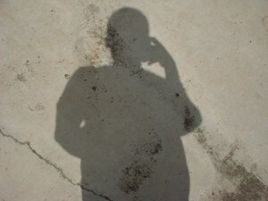
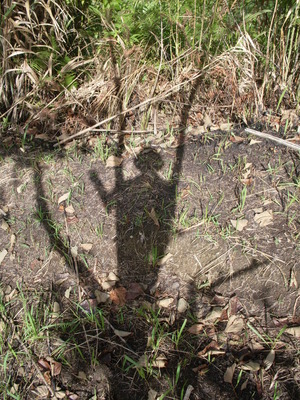

alung  
/ʔaluŋ/
n.
“shadow”
n.
a shadow; a reflection
Eng. shadow; reflection; image; likeness; silhouette
Tigwanon: ʔalung
Binukid: ʔalung
WBM: ʔalung
Ilianen: ʔalung
Cotabato Manobo: ʔalung
Sarangani: ʔalong
Tagbawa: alung
Obo: ʔaung
Proto: ʔalung
DDP: Reflect, mirror (2.3.1.7)
Online dict status: -
Usage level: M
v.
for something, e.g., a mirror
Data Qual: check this \gli - should it be a person?
(eg-ealung/eg-aalung, mig-ealung/mig-ealung, in-ealung/in-ealung, agent, eg><ø-rdpCV-) to cause a reflection or shadow
Online dict status: -
Usage level: M
n.
(alungan, -an) a mirror
Ka seini ne lalag iyan sika se egpitawan nu te ulu-ula nu eyew katuenan nu ke warè naa museng wey malindit diyè te ulaula nu.
Tangkè ka te alungan.
Face to the mirror.
Eng. mirror
Tag. salamin
Ceb. espijo
DDP: Reflect, mirror (2.3.1.7)
Online dict status: -
Usage level: F
vi.
for someone (egpangalungan, migpangalungan/impangalungan, agent, eg><an-paN-) to use a mirror (egpangalunganan, impangalunganan/migpangalunganan/pigpangalunganan, location, eg><an-pA-)
Hengkayi nu pa su egpangalungan e pad.
Come here because I want to use the mirror (that you are holding).
Eng. use mirror; look in mirror; mirror, use
DDP: Look (2.3.1.1), Reflect, mirror (2.3.1.7)
Online dict status: -
Usage level: M
Updated by: RJH,QDL,RJH,QDL
Last updated: 30/Jul/2011
This page last updated: 19/May/2012
Copyright © 2009-2010, Matigsalug Language Christian Association, Inc